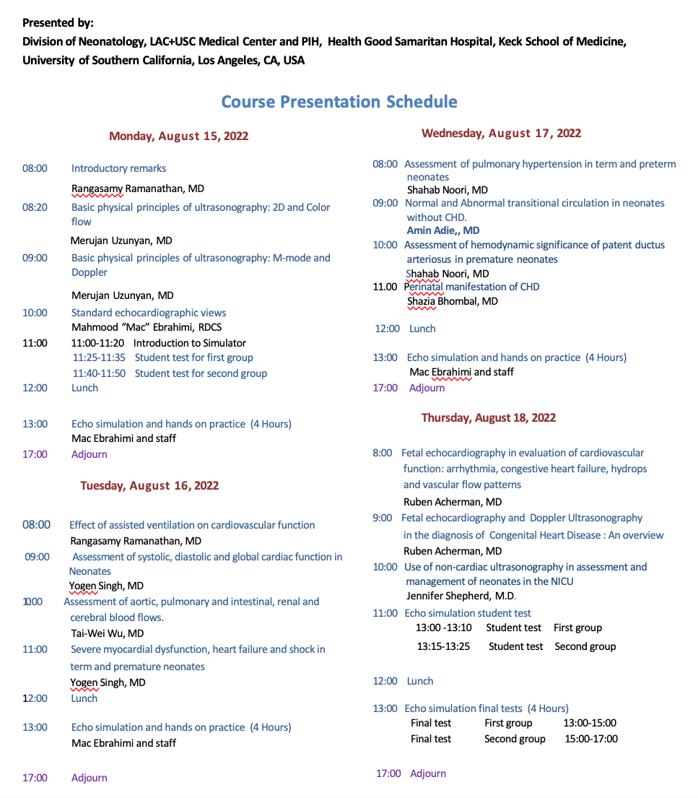

Course Highlights
∎
- The most comprehensive echo course available for neonatologists
-
Hands-on training on multiple echo simulators:
- Obtain complete set of images from all cardiac windows and recognize various structures of a normal heart
- Recognition of spatial relationship of cardiac structures obtained from cutting planes through a 3 dimensional heart image volume
- Assessment of cardiac function and estimation of flow using calculation package
- Differentiating abnormal cardiac structures from a normal heart
- Test of echo skills on simulators and provision of a certificate with successful completion of the test
- Opportunity to perform echocardiography on volunteering children
Course Objectives
∎
Upon completion of this course, the participants are expected to:
- Understand basic principles of ultrasonography
- Recognize basic features of echocardiographic scanners
- Identify correctly basic echocardiographic views
- Evaluate blood flow direction and velocity by pulse and continuous wave and color flow Doppler
- Identify correctly shunts through patent ductus arteriosus and foramen ovale
- Understand application of indices used in measurements of systolic and diastolic function of the heart
- Be able to do quantitative measurements of blood flow through aortic valve, pulmonary valve and superior vena cava on an echo simulator
- Be able to do estimation and measurement of pulmonary arterial pressure by Doppler ultrasound on an echo simulator
- Recognize presence of hypertrophic cardiomyopathy in infants of diabetic mothers
- know echocardiographic findings of pericardial effusion and early signs of cardiac tamponade
- Distinguish normal vs selected CHD using simulators
- Recognize non-cardiac applications of ultrasonography
The participants will also be introduced to the techniques of hands-on echocardiography in the neonate using simulator. However, development of competence to independently obtain quality echocardiograms may require 6 to 9 months of training under supervision in our or any other echocardiography laboratory and NICU.
Course Presentation Schedule
∎

For more information, you could download course brochure pdf file here:
 Course Brochure
Course Brochure
Course Registration Information
∎
- Registration fee is $900.
- For those in training the registration fee is $600.
- For program information please contact:
- Ms. Reyna Mayoral, Activity Coordinator at mayoral@usc.edu
- Bismarck Gutierrez at brg_386@usc.edu
- call (323) 409-3406
- Space is limited. Please register prior to July 1, 2019